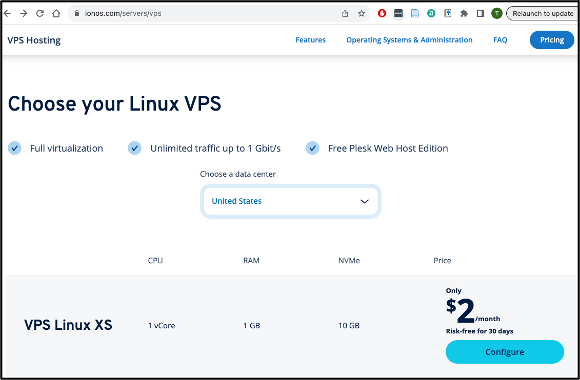

1.1. Subscribing to a Virtual Private Server (VPS) Plan
1.1.1. Assignment Instruction
Assignment Instruction
This instruction shows you how to subscribe to a Virtual Private Server (VPS) service plan online (https://ionos.com in this case). With a VPS subscription, you will have access to a remote server on a virtual machine (VM) in the datacenter of the hosting company. We will choose the one-minus the current long-term support (LTS) version of the Ubuntu Linux distribution as our operating system (OS) to learn how to manage the Linux server and other services.
Note
You may need to create an account with payment information for the subscription.
Requirement: The VPS plan costs $2 per month with a monthly contract.
1.1.2. Getting Started
Getting Started
Follow these steps to subscribe to a VPS plan:
Choose the VPS Plan:
Step 1/5
Visit the IONOS VPS webpage (https://ionos.com/servers/vps), scroll down to find the $2/month VPS Linux XS plan, and select it by clicking on the Configure button.
{kind=link}
Choose the Operating System:
Step 2/5
Continue by choosing Linux as the Operating System (OS) and the one-minus latest Ubuntu version (22.04 in this example since the latest LTS version is 24.04), and click on Continue at the end of the page.
Note
If prompted, skip the advertised services by ticking No thanks.
{kind=link}
Confirm the VPS Plan:
Step 3/5
Continue with the selected VPS in the shopping cart. Make sure it says $2 in total unless you choose other add-on products or services such as a domain name.
{kind=link}
Create User Account:
Step 4/5
If you have not done so already, create an account with payment information (credit card or PayPal). You will access your VM using this account information.
{kind=link}
Complete the Order:
{kind=link}